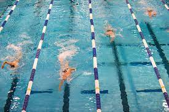
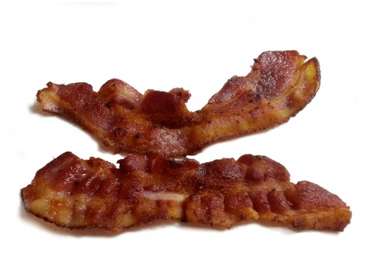

Swimming is one of my favorite activities. I like how freely you can move around in the water.
Cats are my favorite animal, especially my pet cat named Taber. I like them because they are
Bacon is one of my favorite foods. It is a highlight of breakfast, which is also my favorite meal.
